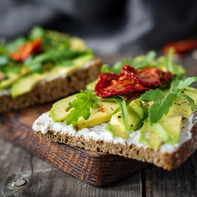

Toasts au chèvre, avocat et tomates séchées

Ingrédients
- Pain de campagne 4tranches
- Fromage de chèvre frais 200g
- Roquette 1 poignée
- Avocats 1
- Tomates séchées 8
- Piments d'Espelette 1 pincée
Préparation
Préparation: 10mn Cuisson: 2 minutes
- Toastez les tranches de pain au grille-pain.
- Pendant ce temps, lavez et essorez la roquette. Pelez, dénoyautez l’avocat et émincez-le en fines tranches.
- Nappez les toasts de fromage de chèvre. Recouvrez de lamelles d’avocat.
- Parsemez de piment d’Espelette, de sel et de poivre, puis de quelques feuilles de roquette.
- Coupez chaque tranche de pain en deux, ou en quatre pour un apéritif, et ajoutez une tomate séchée.
Astuces
Pour cette recette de Toasts au chèvre, avocat et tomates séchées , vous pouvez compter 10 minutes de préparation.
Pour en savoir plus sur les aliments de cette recette de toasts, rendez-vous ici sur notre guide des aliments.
Revenir à la liste de mes recettes